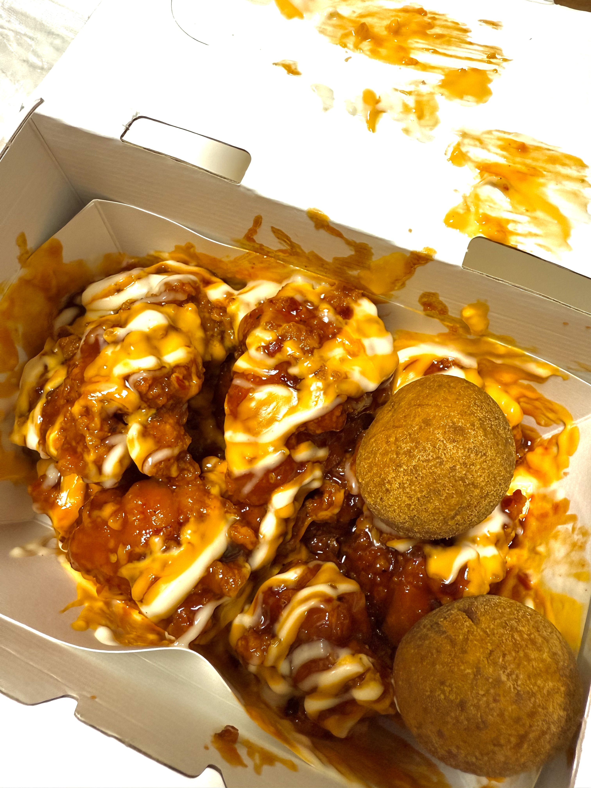

main →
어김없이 학원에 3시간씩 있던 어느날..
갑자기 나가서 치킨이 먹고싶다는 생각이 문득 들었다.
문제를 풀고 있었지만,
시험이 얼마 남지 않았지만, 난 지금 고3이지만......
그저 내 머릿속엔...
치킨들이 춤을 추고 있을 뿐이었다. (사실 다이어트 중이었다.)
그래서 친구랑 학원을 탈출했다!!!
물론 몰래 나온건 아니었다. 싹싹 빌었다.
그날 친구와 바로 치킨을 먹으러 갔다.
그날 먹었던 치킨은 내 인생 최고의 치킨이었다.
모두들 이런 의미있는 음식 하나쯤은 있지 않은가
평소와 같은 음식이지만 유독 더 맛있게 느껴지는...
치킨, 그거 어떻게 안좋아 하는데.
